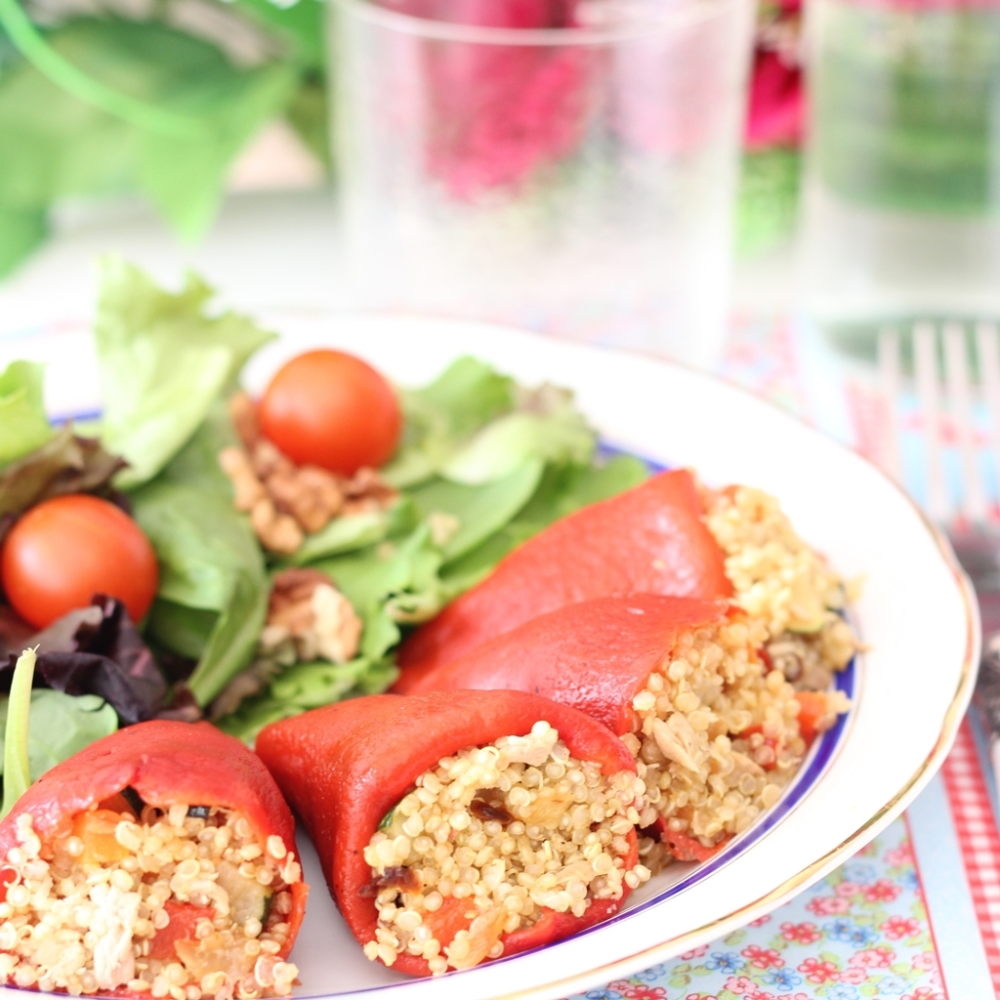

DIFERENTES RECETAS

Pollo Frito Agridulce
Para el pollo agridulce:
En esta ocasión, vamos a preparar un pollo agridulce chino. Pero no uno cualquiera. La receta original. En realidad es muy facil de hacer. ¿Quién necesita ir a los restaurantes de comida china, pudiendo preparselo en casa? Y ya vamos por unos cuantos, tanto en esta página web como en el canal de Youtube. Al final de este artículo, encontrarás otras recetas chinas que hemos preparado ya aquí. Pero de momento, vamos a ver cómo hacer en casa este pollo agridulce chino siguiendo unos sencillos pasos que te muestro a continuación.Ingredientes para 4 personas:

Para la salsa agridulce:
Como hacer el Pollo Agridulce
- Cortamos el pollo en cubos más o menos grandes. De un tamaño un pelín más pequeño de bocado. Hacemos lo mismo con la cebolla y los pimientos. El ajo, lo picamos muy fino.
- En un bol ponemos el huevo y lo batimos. Añadimos el pollo troceado y le añadimos una pizca de sal. Después añadimos la cucharada de vino blanco y la de soja. Mezclamos bien
- A continuación puedes dejar marinar esto en la nevera de 4 horas a un día entero. Pero si no quieres, puedes proseguir con la receta sin esperar más. Añadimos y cubrimos todo esto con generosa cantidad de maizena y mezclamos bien. Puedes también pasar cada trozo de pollo por la maizena en un plato aparte pero, la maizena es harina de maíz muy fina, y es un poco engorroso para las manos hacerlo así. Por eso prefiero añadírsela directamente, aunque gastemos mucha más cantidad de maizena de que la otra forma.
- Metemos en el congelador para que la masa repose y mientras tanto, preparamos la salsa agridulce que acompañará al pollo. Para ello, ponemos todos los ingredientes de la salsa, salvo la maizena, en una sartén. Calentamos mientras removemos con frecuencia. Dejamos que espese unos 10 minutos y reservamos
- Ahora, podemos volver a sacar las pechugas de pollo del congelador. Les retiramos el exceso de maizena y freímos cada pieza en abundante aceite muy caliente. Cuando estén doradas, las retiramos y las colocamos sobre papel absorbente.
- En un wok o en una sartén grande, añadimos un chorrito de aceite. Lo calentamos a fuego medio y añadimos el diente de ajo picado. Justo cuando comienza a coger color, añadimos los pimientos, la cebolla y una pequeña cantidad de sal. Mezclamos todo bien mientras dejamos cocinar 3 minutos más.
- Es el momento de añadir la salsa agridulce. Añadimos también una cucharadita de maizena, disuelta en 10ml de agua. Esto es para que espese la salsa. Mezclamos bien y dejamos cocinar un par de minutos más, sin dejar de remover.
- Añadimos el pollo. Volvemos a mezclar todos los ingredientes y servimos inmediatamente ¡Esta comida no espera!
Broceta de limón y manzana
Ingredientes:
Preparación:
Postres Faciles y Rapidos
Mousse de Dulce de Leche Express
Ingredientes:
Agua 150 c.c.
Azúcar 300 Gramos
Crema 400 c.c.
Dulce de leche repostero 400 Gramos
Nidos de caramelo para decorar c/n A gusto
Nueces 200 Gramos
Esencia de vainilla 1 cdita.
Preparación paso a paso:
MOUSSE
NUECES ESCARCHADAS
Tarta Flan
Acompañamiento:
Crema batida c/n
Frutas frescas c/n
Ingredientes para el Flan:
Almidón de Maíz 50 Gramos
Azúcar 125 Gramos
Crema de leche 250 c.c.
Huevos 4 Unidades
Esencia de vainilla 1 cdta
Leche 1/2 Litro
Naranja para su ralladura 1/2 unidad
Ingredientes para la masa:
Preparacion:
MASA
Precalentar el horno a 180° C. Luego mezclar mantequilla fría en cubos, harina, azúcar y formar un arenado.
Agregar un huevo y cuchara de agua fría hasta formar una masa, dejar reposar en la heladera media hora. Finalmente fonzar en el molde y blanquear levemente en el horno.
RELLENO
Calentar en una cacerola leche y la mitad del azúcar.
Mezclar los huevos, la esencia de vainilla, la crema de leche y ralladura de media naranja.
Unir almidón de maíz con la otra mitad del azúcar y luego llevar a la preparación de huevos.
Batir hasta que quede homogéneo.
Llevar todo al fuego siempre mezclando a la par, hasta que rompa hervor.
Dejar reposar en temperatura ambiente aproximadamente unos 10 minutos.
Verter en la masa la crema ya fría y llevar al horno por unos 45 minutos.
Dejar enfriar, y una vez a temperatura ambiente, servir con crema y frutas a elección.
PLATILLOS DIETÉTICOS
Pimientos rellenos de quinoa
Una receta de aprovechamiento de sobras que nos alegra una comida o una cena. Podemos aprovechar unas sobras de quinoa con champiñones o de tabouleh de quinoa para rellenar unos pimientos del piquillo que, acompañados de una buena ensalada, harán un plato completo y muy nutritivo.
Salmón a la plancha

Se prepara en 5 minutos y acompañado de verduras a la plancha como calabacín o berenjena o de una buena ensalada y es un plato completísimo para esos momentos en los que es imposible sacar tiempo para recetas más elaboradas como este salmón a la naranja.
Una receta de aprovechamiento de sobras que nos alegra una comida o una cena. Podemos aprovechar unas sobras de quinoa con champiñones o de tabouleh de quinoa para rellenar unos pimientos del piquillo que, acompañados de una buena ensalada, harán un plato completo y muy nutritivo.
Gambones a la plancha

Tener prisa y querer llevar una dieta saludable no está reñido con darse un capricho de vez en cuando y para eso qué mejor que un poco de marisquito como unos gambones que se pueden acompañar de una sopa de verduras al curry o de una ensalada thai o una crema de verduras, en este caso, eran espinacas.
Ternera a la plancha con ensalada

Otro clásico de dieta, la ternera a la plancha, que no tiene por qué ser ese filete estilo suela de zapato que nos solemos imaginar cuando pensamos en comida saludable.
Tortilla francesa
Otro clásico al que, echándole un poco de imaginación, podemos convertirlo en un plato muy vistoso, porque una de las claves para llevar una dieta más saludable es no caer en la monotonía y cocinar platos que resulten apetecibles a primera vista. Yo esta vez, he añadido unos trocitos de queso a unas sobras de espinacas salteadas con pimiento rojo y lo he puesto como relleno de la tortilla.
Pescado a la plancha
Si además de una dieta saludable pretendemos reducir al mínimo las grasas, el salmón puede no ser lo más adecuado y será más aconsejable optar por pescados blancos más magros como esta meiga (que creo que en el resto de España se llama rapante) con patata y zanahoria al vapor (la patata y la zanahoria se cocinan al vapor en el microondas en solo 6 minutos).
RECETAS VEGANAS
Fideos de arroz con salteado de tofu y pimiento

Ingredientes
Fideos de arroz 120 g
Tofu firme 200 g
Pimiento rojo 1
Jengibre fresco trocito 1
Curry molido media cucharadita
Salsa de soja 15 ml
Ajo granulado cuarto de cucharadita
Cúrcuma molida una cucharadita
Lima 1
Pimienta negra molida
Sal
Aceite de oliva virgen extra
Perejil fresco o cilantro
Preparación:
Desechar el líquido del tofu y escurrir bien. Envolver en varias capas de papel de cocina y dejar como mínimo 15 minutos con un peso encima. Cortar en cubos del tamaño de un bocado. Calentar un poco de aceite en una sartén y dorar el tofu por todos lados. Retirar. Cocer los fideos de arroz en agua hirviendo con un poco de sal durante unos tres minutos, siguiendo las instrucciones del paquete. Escurrir y enjuagar con agua fría, soltándolos un poco con un tenedor. Reservar. Rallar o picar fino el jengibre. Cortar el pimiento en tiras finas. Saltear en la misma sartén a fuego alto ambos ingredientes durante dos minutos. Salpimentar, agregar la salsa de soja y las especias. Rehogar 5 minutos. Devolver el tofu, dar unas vueltas e incorporar los fideos. Mezclar todo bien hasta que se integren. Servir con perejil picado.
Ensalada de quinoa, calabaza asada y granada

Ingredientes
300 g de calabaza
1 cebolla morada
75 ml de aceite de oliva virgen extra
200 g de quinoa
30 g de mezcla de semillas
cilantro fresco al gusto
Menta fresca al gusto
1 granada
20 ml de zumo de limón.
Preparación:
Comenzaremos precalentando el horno a 220 grados. Cortamos la calabaza pelada en dados y la cebolla morada en láminas y las asamos con un poco de sal y una cucharada de aceite de oliva durante 20 minutos. Por otra parte lavamos la quinoa y la cocemos en agua hirviendo con sal, durante 10 a 15 minutos. La escurrimos y la dejamos drenar totalmente. Combinamos el resto de ingredientes en un bol. Añadimos la quinoa, la calabaza asada y la cebolla, y removemos. Sazonamos y servimos con las hierbas picadas por encima.
RECOMENDACIONES
1. Una cocina limpia y reluciente: Antes de empezar a cocinar, asegúrate de tener la cocina limpia y reluciente. Las manchas y salpicaduras de alimentos, la grasa y el aceite, y otros residuos que pueden depositarse en las mesadas, el drenaje del lavadero y paredes pueden convertirse en focos de infecciones. Intenta mantener tu cocina limpia de manera habitual para evitar riesgos.
2. Una despensa limpia y ordenada: La despensa debe estar a altura, lejos del suelo, y en un lugar fresco y ventilado, preferentemente lejos del horno. Para conservar correctamente los alimentos debes guardarlos a unos 17 grados, bien cerrados (si están abiertos, coloca presillas o clips para cerrarlos) y lejos de fuentes de calor y humedad. Revisa las etiquetas de los alimentos para corroborar sus recomendaciones de conservación y asegurarte de que no estén vencidos.
3. Cubo de basura con tapa: Parece una obviedad pero no lo es. El cubo de la basura debe estar ubicado en un lugar alejado de los alimentos y preferentemente tener tapa para evitar la multiplicación de gérmenes y su traspaso a la comida.
4. La higiene personal: Antes de comenzar a cocinar, recuerda lavar bien tus manos con agua y jabón y secarte con un paño limpio. Al cocinar con los niños, enséñales a lavarse las manos antes y durante el proceso, además de a mantener extremo cuidado a la hora de manipular la comida.
5. Lavar bien los alimentos: Es sumamente importante lavar adecuadamente los alimentos, principalmente aquellos que pienses servir crudos. La lechuga, las espinacas, las acelgas y otras hortalizas son las más complejas a la hora del lavado ya que su higiene debe realizarse hoja por hoja. Tómate tu tiempo para llevarlo a cabo ya que, si no limpias bien cada recoveco, puedes ingerir bacterias que te generen enfermedades gastrointestinales. Siempre dedica tiempo y atención al lavado de los vegetales y las frutas. ¡Es la única manera de asegurarnos de que estén bien limpios antes de ingerirlos!
6. Cocinar adecuadamente los alimentos: Los microorganismos tienen dificultad para crecer en temperaturas superiores a los 55ºC o inferiores a los 5ºC, así que: no lo dudes y cocina bien tus alimentos. Sobre todo cuando cocines piezas grandes de pescado, carnes rojas, aves y huevos, asegúrate de que alcancen dicha temperatura también en el interior. Ten especial cuidado al cocinar en microondas ya que la cocción puede realizarse de manera desigual, cocinando en exceso el exterior de los alimentos, sin llegar a calentar por completo el interior.
7. Descongelar poco a poco: Si quieres descongelar alimentos, hazlo poco a poco. Lo ideal es sacarlos del frigorífico la noche anterior y dejarlos dentro de la nevera hasta que se descongelen. La descongelación en microondas no sólo no es regular, sino que además puede cocinar alguna parte del alimento, generando un crecimiento bacteriano y terminar enfermándonos. Si utilizas el microondas para descongelar, hazlo siempre con la opción de descongelado y poco a poco, para evitar la proliferación de bacterias. Otro consejo: cocina rápidamente las carnes, pollos, mariscos y pescados descongelados para "matar" las posibles bacterias cuando antes.
8. Evitar la contaminación cruzada: Seguramente te preguntes qué es la contaminación cruzada. Pues bien, ¿alguna vez has cortado pollo en una tabla y luego has utilizado el mismo cuchillo y la misma tabla para cortar verduras? Imagina que el pollo tiene microbios, ¿no crees que pueden pasar de él a las verduras a través de los utensilios de cocina? Utiliza siempre que puedas utensilios de cocina diferentes para cortar frutas, vegetales y carnes crudas. Si no es posible porque tienes sólo una tabla y un cuchillo afilado para cortar, lava los utensilios entre un uso y otro, y en el caso de la tabla, utiliza cada lado para una actividad. Recuerda cambiar los paños de cocina si los utilizas después de manipular alimentos crudos o si se han manchado al cocinar. Precaución ante todo ;) . El dicho popular dice "mejor prevenir que curar" y no hay nada más cierto. Mantén tu cocina limpia y en orden, y recuerda nuestros consejos para cocinar responsablemente, así evitarás riesgos para ti y toda tu familia.